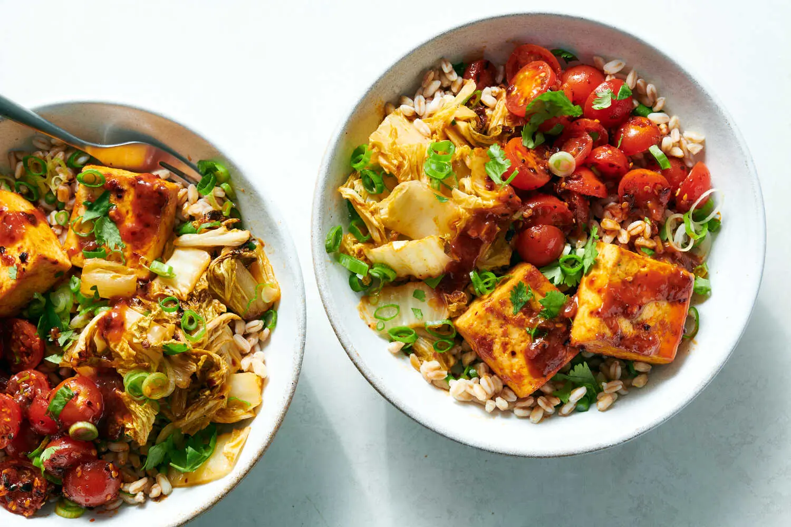

Sweet Chile Tofu Noodle Bowl

After years of receiving stupid Napa cabbage in our CSA box,
and letting it sit in the fridge until unevitably throwing it
in the compost, my dad finally found this recipe as a way of putting
it to good use. It's fucking scruptious.
The original recipe is for a grain bowl,
but we both agreed that grain bowls are bad and opt to use a pack of ramen noodles instead.
Ingredients
- 1 package (14 or 16oz) firm or extra-firm tofu
- 1/4 cup neutral oil, such as avocado or grapeseed
- 2 garlic cloves, grated or minced
- 1/4 cup ketchup
- 1 1/2 tablespoons soy sauce
- 1 1/2 tablespoon fish sauce (substitute umami seasoning or more soy sauce)
- 1 tablespoon chile crips
- 1 teaspoon rice vinegar
- 1 1/2 cups cherry tomatoes, halved
- 1 1/2 pounds napa cabbage, halved lengthwise, cored, and sliced crosswise 1/2 inch thick
- 1 bunch scallions, thinly sliced
- 1 lime, cut into wedges (substitue more rice wine vinegar)
- 1 package ramen noodles
Steps
- Heat oven to 425 degrees. Line a baking sheet with parchment paper
- Cut the tofu into 1-inch-thick slabs. Cut each slab in half to make squares.
Line a plate or baking sheet with paper towels and place tofu on top. Place
another layer of paper towels on the tofu and weigh down with a skillet or cans.
Let sit for at least 15 minutes.
- While the tofu is draining, make the sauce: Heat the oil in a small pot or
skillet over medium-high. Stir in the garlic and let cook until fragrant,
about 1 minute. Whisk in ketchup, soy sauce, fish sauce, ½ tablespoon of the
chile crisp and the rice vinegar. Set aside to cool for a few minutes.
- In a small bowl, mix together the tomatoes, the remaining ½ tablespoon chile
crisp and a pinch of salt. Set aside.
- Place tofu on one side of the prepareed baking sheet and generously brush
both sides of the pieces with the sauce.
- Add the cabbage to a bowl, sprinkle lightly with salt and toss with ¼ cup sauce.
(Reserve remaining sauce for serving.) Spread cabbage on the other side of the
baking sheet in an even layer.
- Roast tofu and cabbage for about 30 minutes, tossing the cabbage after 15 minutes.
The tofu should be lightly golden at the edges and the cabbage tender and bronzed.
Toss about half of the scallions into the cabbage and squeeze lime wedges over
everything (or drizzle with a little rice vinegar). Taste cabbage and add more
salt or sauce, if needed.
- To serve, put 1 cup grains in each of 4 bowls. Drizzle the grains with a little
of the sauce. Top with tofu, cabbage and spicy tomatoes. Garnish with cilantro
and remaining scallions, and drizzle with remaining sauce. Serve warm or at
room temperature.